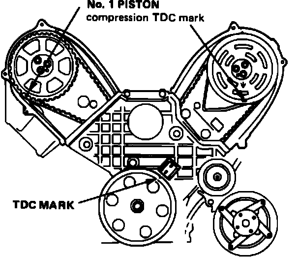
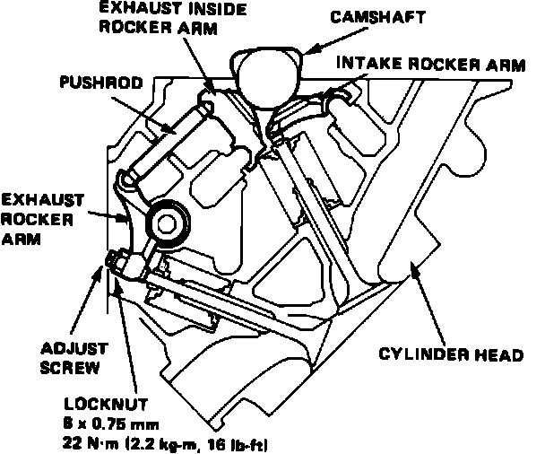

Valve Clearance: Adjustments
Fig. 55 Valve Adjustment Timing Mark Reference:

Fig. 56 Valve Adjustment:

The two V6 engines used on Legend models have hydraulic valve lifters which do not normally require adjustment. However, if cylinder head or valve requires service, they should be adjusted as follows:
1. Position front and rear camshafts at TDC of compression stroke for cylinder No. 1, Fig. 55.
2. Tighten cylinder No. 1 exhaust valve adjusting screw until screw contacts valve, then tighten an additional 1 1/2 turns and torque locknut to 16 ft. lbs., Fig. 56.
3. Repeat adjustment sequence for No. 2 and 4 exhaust valves.
4. Rotate crankshaft clockwise one full turn to bring No. 5 cylinder to TDC compression stroke, then adjust exhaust valves for cylinders 3, 5 and 6.